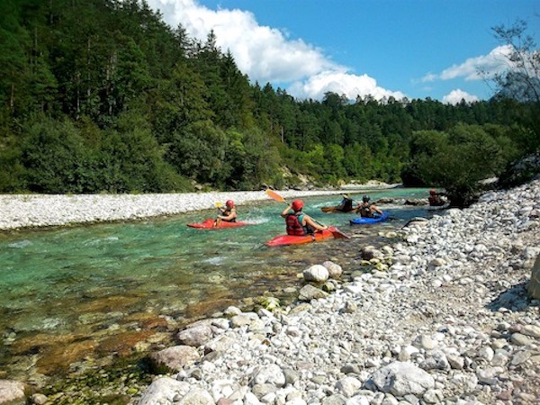

Whitewater Rafting

Length
Our whitewater river adventure begins at 9:00 am. It starts off with a peaceful float down a wide, calm section of the river surrounded by beautiful rocks and forrest. We encounter our first excitement within 30 minutes, and the fun continues at various levels until our lunch break at 11:30 am. The adventure continues at 12:30 pm as we set in for the final leg of the river. For the next 2 hours we enjoy waters that are fast moving, barely moving, and raging! Our adventure ends at approximately 2:30 pm where our welcoming committee is ready to receive you.
Skill Level
No prior rafting experience is necessary to enjoy our whitewater adventure! Our highly trained guides are not only professional rafters, but also professional trainers! They are skilled at assessing the abilities of their crew and are capable of adjusting the adventure appropriately. Safety gear and life jackets are always worn, but we do require that all rafters are able to swim and are at least 12 years of age.
Cost
$ 35.00 per person
Services Provided
All safety gear, including life jackets, will be provided. Before the start of the adventure, a continental breakfast is served along with hot chocolate and coffee. Lunch is also provided and served, and please stay for a bit at the end of our adventure to enjoy BBQ and socialize! Transportation will bring all rafters to the starting and finishing locations.
Kayaking
Length
Kayaking adventure begin at 9:00 am, 10:00 am, and 11:00 am. Each begins with a short practice session in peaceful water where adventurers learn to manuver and recover properly. The group then proceeds together down the river enjoying the scenery and warming up. Skills are tested through moderate rapids for the first half of the trip, then we break for lunch approximately 2 hours after the start time. After a 1 hour break, we continue down the river through more challenging rapids, finishing the trip about 2 hours later.
Skill Level
We offer kayaking adventures for both beginners and intermediates. For both beginners and intermediates, you must be at least 16 years old and be able to swim. If you are under the age of 18, parental consent is required. Safety gear and life jackets are provided. All adventurers must demonstrate ability to properly manuver and recover at the start of the trip before proceeding down the river.
Cost
$ 25.00 per person
Services Provided
All safety gear, including life jackets, will be provided. Before the start of the adventure, a continental breakfast is served along with hot chocolate and coffee. Lunch is also provided and served, and please stay for a bit at the end of our adventure to enjoy BBQ and socialize! Transportation will bring all rafters to the starting and finishing locations.
Camping & Hiking
Length
Our camping adventures bring you into the most beautiful, secluded areas of the river. We begin our 1 hour hike at 9:00 am, which is full of gorgeous forrest, bridges, landscaping, and the most stunning views of the river possible. After arriving at the camp site and setting up, lunch is served and relaxation by the river begins. As the evening sets in, enjoy time around the fire and socializing. We spend one night at the site, and in the morning after breakfast, we set out on another hike approximately 1 hour in length that brings us back to our base.
Skill Level
All adventurers of all skill levels are welcome! The hikes are on established trails over mostly flat land, with only occasional inclines. Adventurerers must be at least 18 years of age or accompanied by an adult.
Cost
$ 50.00 per person
Services Provided
Hiking backpacks, tents, and camping chairs may be provided but adventurers are welcome to bring their own. Before the start of the adventure, a continental breakfast is served along with hot chocolate and coffee. Lunch and dinner is provided and served, along with a pancake breakfast in the morning at camp. Also, the most amazing ingredients for smores are available for our evening around the fire!